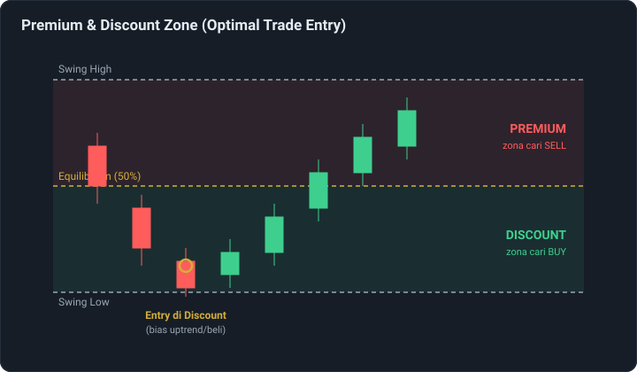
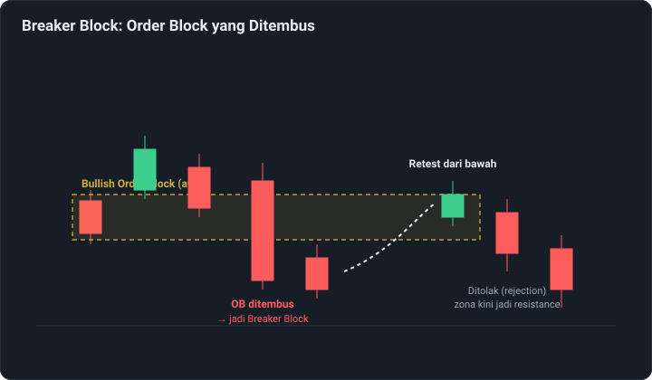
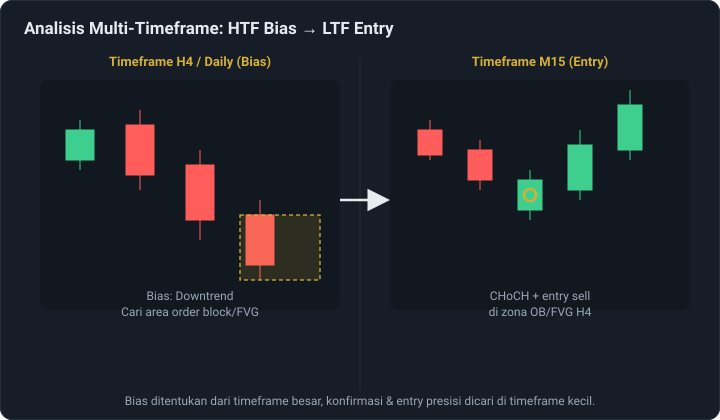
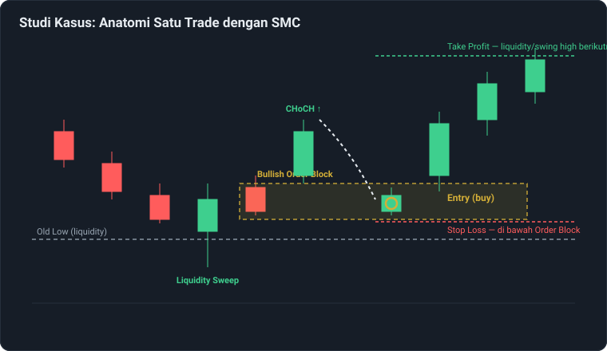

Smart Money Concept (SMC) Part 2: Konsep Lanjutan
Di artikel sebelumnya, sudah dibahas dasar-dasar Smart Money Concept (SMC): market structure, break of structure, liquidity, order block, dan fair value gap. Di bagian kedua ini, kita masuk ke konsep yang lebih lanjut — termasuk cara menentukan area entry yang lebih presisi, mengenali jebakan likuiditas, dan menggabungkan semua konsep dalam satu contoh trade lengkap.
Premium & Discount Zone (Optimal Trade Entry)
Setelah mengetahui arah bias dari market structure, langkah berikutnya dalam SMC adalah menentukan di mana sebaiknya mencari entry dalam rentang pergerakan harga tersebut. Di sinilah konsep Premium dan Discount berperan.
Sebuah rentang harga (dari swing low ke swing high) dibagi dua oleh garis equilibrium di titik 50%:
- Discount zone — separuh bagian bawah rentang, dianggap area "harga murah" dan menjadi tempat ideal mencari entry buy saat bias sedang uptrend.
- Premium zone — separuh bagian atas rentang, dianggap area "harga mahal" dan menjadi tempat ideal mencari entry sell saat bias sedang downtrend.
Area ini sering disebut juga Optimal Trade Entry (OTE) — mencari entry searah bias utama, tapi pada harga yang secara relatif masih "diskon" (untuk buy) atau "premium" (untuk sell), alih-alih mengejar harga yang sudah bergerak jauh.

Breaker Block: Ketika Order Block "Gagal"
Tidak semua order block bertahan sebagai zona yang valid. Ketika harga menembus habis suatu order block (bukan sekadar retest, tapi benar-benar ditembus), zona tersebut berubah peran menjadi breaker block — order block yang gagal, dan kini justru berfungsi sebagai area support/resistance dari arah berlawanan.
Konsep ini mirip dengan prinsip role reversal pada support/resistance biasa: order block bullish yang ditembus ke bawah bisa berubah menjadi zona resistance saat harga kembali naik ke area tersebut (dan sebaliknya untuk order block bearish yang ditembus ke atas).
Istilah mitigation block sering dipakai bergantian dengan breaker block, meski sebagian praktisi membedakan keduanya berdasarkan seberapa kuat penembusan dan konteks struktur saat terbentuk. Intinya sama: zona order block lama yang sudah "gagal" tetap bisa relevan, hanya perannya berbalik.

Inducement: Jebakan Sebelum Jebakan
Inducement adalah area likuiditas kecil yang sengaja "dipancing" terlebih dahulu sebelum pergerakan utama terjadi — semacam jebakan pendahuluan sebelum liquidity sweep yang sebenarnya. Konsep ini muncul karena pasar tidak selalu bergerak lurus menuju area liquidity utama; sering kali ada gerakan kecil yang memancing trader retail masuk posisi terlebih dahulu, sebelum harga benar-benar bergerak ke arah yang direncanakan.
Memahami inducement membantu trader lebih berhati-hati terhadap sinyal palsu — pergerakan kecil yang terlihat seperti breakout atau reversal, padahal hanya jebakan sementara sebelum pergerakan sesungguhnya.
Analisis Multi-Timeframe dalam SMC
Praktisi SMC jarang menganalisis satu time frame saja. Pendekatan umum yang dipakai adalah kombinasi dua time frame atau lebih:
- Timeframe besar (HTF) — seperti H4 atau Daily, dipakai untuk menentukan bias arah utama dan mengidentifikasi zona-zona penting (order block, FVG, area liquidity besar).
- Timeframe kecil (LTF) — seperti M15 atau M5, dipakai untuk mencari konfirmasi presisi saat harga mencapai zona yang sudah ditandai di timeframe besar, misalnya lewat CHoCH kecil sebagai sinyal entry.
Pendekatan ini membantu menyeimbangkan antara melihat gambaran besar arah pasar, sekaligus mendapatkan titik entry yang lebih presisi dan risiko yang lebih terukur.

Studi Kasus: Menggabungkan Semua Konsep dalam Satu Trade
Berikut contoh alur bagaimana konsep-konsep SMC — dari Part 1 dan Part 2 — biasa digabungkan dalam satu skenario trade:
- Harga bergerak turun mendekati old low yang menyimpan liquidity (banyak stop loss menumpuk di bawahnya).
- Muncul liquidity sweep — harga menembus sebentar di bawah old low lalu berbalik naik.
- Candle bearish terakhir sebelum pembalikan ditandai sebagai bullish order block.
- Harga mengonfirmasi perubahan arah lewat CHoCH, menembus struktur turun sebelumnya ke atas.
- Harga pullback (retrace) kembali ke zona order block sebagai area entry.
- Entry buy diambil di zona tersebut, dengan stop loss diletakkan tepat di bawah order block.
- Take profit ditargetkan di area liquidity/swing high berikutnya.

Catatan Penting
Contoh di atas adalah ilustrasi alur berpikir, bukan resep yang selalu berhasil di kondisi pasar nyata. Kondisi pasar riil sering lebih kompleks — sinyal bisa tidak sejelas ilustrasi, dan interpretasi zona tetap bisa berbeda antar trader. SMC tetap sebuah kerangka membaca pasar, bukan sistem otomatis yang bebas dari risiko kesalahan analisis maupun manajemen risiko yang buruk.